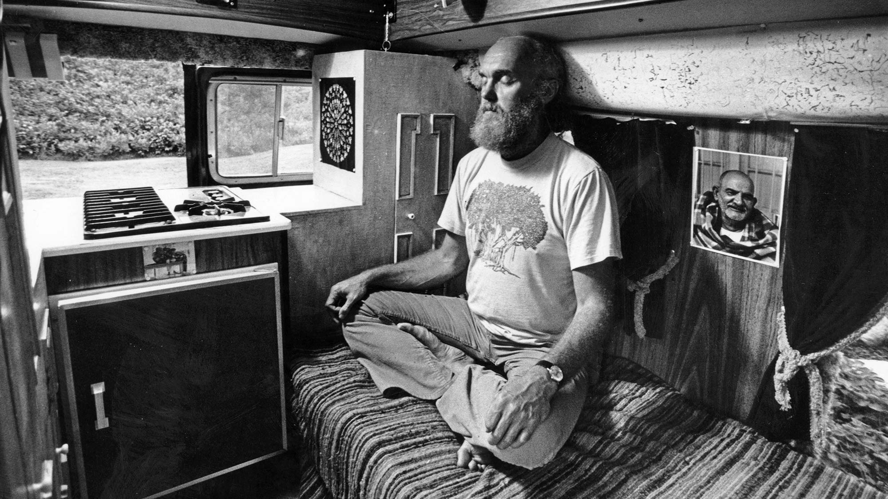
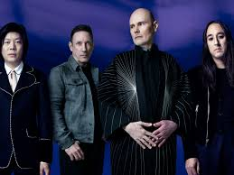

Audio & Sound
On this page of the website, my primary goal is to put forward the best inspirations I can think of within the
realm of sound. This is a very personal and meaningful area to most people, and it certainly is for me.
Music is the most universal artform ever created, many people can fall in love with a specific medium but
music seems to profoundly impact the human spirit. I am not limiting this to music, because the human
voice and storytelling is also a part of this, but we all are personally connected to songs
and I wanted to include some of these influences here.
The audio all effects me in different ways and I will explain them all individually. However, one common
note to make of them all is that they have had an incredible impact on how I live my life.
Some of the music has shaped me as a person since my teenage years, and I will credit another piece of
audio with making me believe in life all over again. I listen to audio constantly when I am doing
my photography, I can't imagine going shooting without it in most cases. If I am filming a short
creative film in my bedroom at 3am, the music will fit that mood. Furthermore, the following pieces
of audio have shaped my philosophies, which are unavoidably important to every artist.
The first example of audio that has impacted my photographic practice is an audio recording of Ram Dass,
a spiritual teacher.
The audio document can be found at
This link
This audio used to be on YouTube and was taken down, and I spent over a year regularly posting in
different websites asking for help finding a remaining trace of it. Eventually, a stranger sent me it.
This audio has been my saving grace throughout my time at university. It has repeatedly
made me believe in life, through a series of financial struggles and personal problems. This audio
inspires my work for a variety of reasons.
Most prominently, the words of Ram Dass in this clip in particular have made me realise that I am
not going anywhere, I can relax and accept where I am. I can create, because lifes struggles aren't everything.
It is very easy for me to say 'I will make work when I sort my life out' but this clip helps me to know
that I have already arrived, I am allowed to do things that aren't quantifiably practical, because they
are essential to my happiness as a person. This philosophy has changed my life and ensured that I work
on my creative projects.

'Mayonaise' - Smashing Pumpkins
A link to the audio can be found at
This song means a lot to my practice because it has been a companion on many of my shoots since I was
17. At home, I would drive around in the early hours of the morning in the countryside and listen to this song,
stopping to take pictures in random locations.
The lyrics of the song have always spoken to me but the sound of this audio is so specific, so unique to
this song and my personal memory of the first time hearing it, something in this song and my conncetion to it means
that my hair stands on end when I hear it and I am immediately feeling inspired.
So much of my inspiration comes from this, it is not quantifiable, but the feeling of inspiration is
undeinably wtihin me nonetheless. This song, above any other, brings this out of me.

'Hunky Dory' - An album by David Bowie
A link to the audio can be found at
This audio means a lot to my practice because
The Lex Fridman Podcast
A link to the audio can be found at
This audio means a lot to my practice because